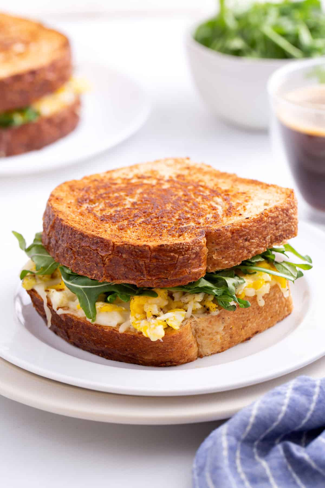

Scrambled Egg Sandwich

This recipe combines textures of scrambled eggs and toast to create the ideal breakfast sandwich.
Ingredients
- 1 tablespoon milk
- 2 large eggs, beaten
- 2 slices of toast
- 2 tablespoons mayonaise
- 1 teaspoon yellow mustard
- salt and pepper
Cooking Steps
- Beat eggs, milk, salt, and pepper in a bowl, pour the mixture on a skillet burning over medium heat
- Let mixture cook without stirring for 1 1/2 minutes. Flip eggs and let it continue to cook for one minute without stirring then remove from heat
- Spread mayonaise and mustard on each side of the toast. Place scrambled eggs on toast to have a completed sandwich. Enjoy!